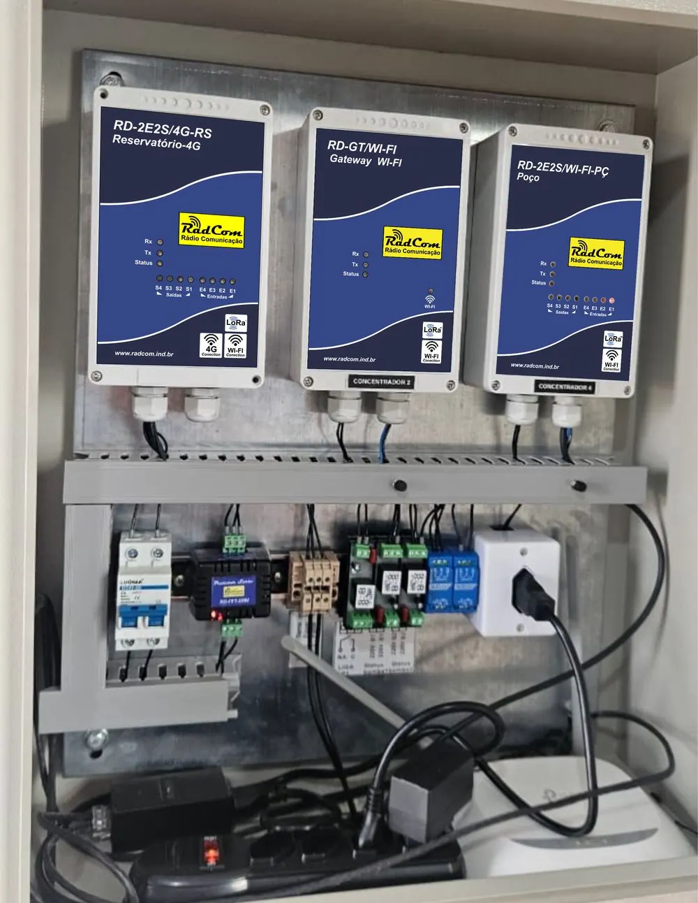

Página de teste
Três propostas para a chamada final da Hidro
Cada opção substitui a faixa "Converse com a RadCom sobre sua aplicação", que fica logo abaixo da simulação. Os botões já levam aos contatos reais. A mensagem do WhatsApp chega pré-preenchida com "Olá! Vim pelo site e quero saber mais sobre a RadCom Hidro.". Os textos são sugestões e podem ser trocados à vontade.
Fale com a RadCom
Vamos montar o sistema do seu reservatório?
Conte como é a sua instalação e a equipe RadCom indica os módulos certos para medir o nível e comandar a bomba.
Prefere e-mail? Vendas@radcom.ind.br

Barretos – SP · atendimento em todo o Brasil
Fale com a RadCom
Fale direto com quem desenvolve o equipamento.
Tire dúvidas sobre a Hidro, peça uma indicação de módulos ou um orçamento para a sua aplicação.
Próximo passo
Do primeiro contato ao reservatório monitorado.
-
Conte sua aplicação
Diga quantos reservatórios e poços quer interligar e como é o local.
-
Receba a indicação
A equipe RadCom indica os módulos e a conexão certa: LoRa, Wi-Fi ou 4G.
-
Acompanhe de onde estiver
Com o sistema instalado, nível e bomba ficam visíveis na plataforma.